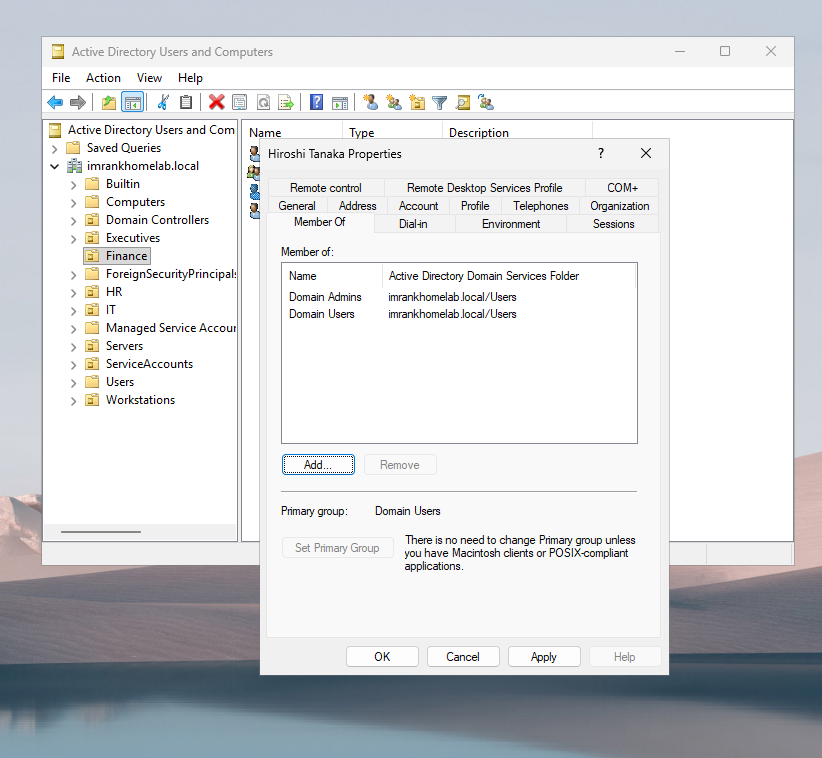
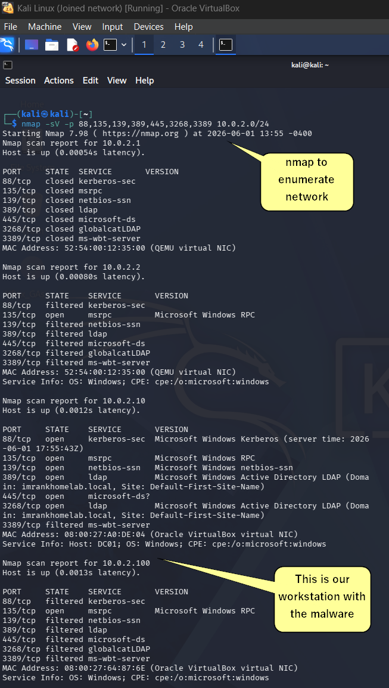

Attack Overview
Attack Walkthrough
A Help Desk Ticket Goes Wrong
Hiroshi Tanaka (htanaka), the new company Accountant, calls the help desk on his first day. He can't access the Finance shared folder. The ticket lands with Maroni Smith (msmith), the Help Desk Technician — who is already managing three other open tickets.
Maroni opens Active Directory Users and Computers and looks for the fastest fix. The correct answer is to add htanaka to the Finance-Staff security group. Instead, she adds htanaka directly to Domain Admins. Ticket closed.
No approval was required. No alert fired. No one reviewed the change. Hiroshi Tanaka - an Accountant with zero IT responsibilities is now one of the most privileged accounts in the entire domain. Nobody notices for two weeks.
{kind=link}

A Phishing Email Lands In htanaka's Inbox
Two weeks later, Hiroshi receives an email appearing to come from a known vendor. Subject: "INV: Your invoice is ready for review." The sender name looks right. The email body is professional. The attachment is named INV OVERDUE.pdf.
Hiroshi has received no security awareness training. He has no framework for evaluating whether an attachment is suspicious. He opens it.
The PDF contains a zero-day exploit targeting a vulnerability in Adobe Reader. When htanaka opens the file, a cmd windows opens and then quickly closes. The document appears blank or slow to load. He assumes it's a formatting issue and closes it. In the background, shellcode has already executed silently within the Adobe Reader process.
Windows Defender scanned the file on download and found nothing. It monitored the process behavior and found nothing. No signature existed for this vulnerability. No behavioral pattern had been documented.
Reverse Shell Established - Attacker Is Inside
The shellcode connects back to the attacker. Outbound connections are almost never blocked because that's how normal internet traffic works. The firewall sees WS01 making an outbound connection and lets it through.
The attacker's machine accepts the connection. A full command shell opens, running as htanaka on WS01, from anywhere in the world. The attacker is now inside ImranKHomeLab's network.
Network scan identifies DC01 and WS01
From the attacker machine (Kali Linux, representing the attacker's machine), an nmap scan maps the entire LabNet subnet. DC01 is identified at 10.0.2.10 by the presence of ports 88 (Kerberos), 389 (LDAP), 445 (SMB), and 3268 (Global Catalog)- the signature port pattern of a Windows domain controller. The domain name imrankhomelab.local is visible in the LDAP service banner. WS01 is identified at 10.0.2.100.
{kind=link}

Stolen credentials confirmed valid
The attacker uses htanaka's credentials to request a Kerberos Ticket Granting Ticket directly from DC01. The domain controller responds by issuing a valid TGT. The stolen credentials are confirmed active.
Note: Windows Server 2025 enforces SMB signing and LDAP channel binding by default. This hardening slows down common attack tooling, even if it doesn't stop an attacker with valid credentials.
SPN enumeration finds svc_sqlserver
The attacker queries the domain for all accounts with a Service Principal Name registered. SPNs identify service accounts whose Kerberos tickets can be requested by any authenticated user and cracked offline. Any domain user can run this query.
The query returns svc_sqlserver with SPN MSSQLSvc/sql01.imrankhomelab.local:1433. The account had never logged in. Its password had not been changed since creation. It was a forgotten service account, configured during the company's initial setup and never revisited.
Service ticket requested and hash captured
The attacker requests a Kerberos service ticket for svc_sqlserver using htanaka's credentials. The DC processes this as a completely legitimate Kerberos operation The returned ticket is encrypted with svc_sqlserver's password as the key.
The hash is saved to a file for offline cracking.
Examining the raw hash file revealed an important finding: the hash began with $krb5tgs$18$ rather than $krb5tgs$23$. Windows Server 2025 issued an AES-256 encrypted ticket (etype 18) rather than the older RC4 format (etype 23). AES-256 is significantly harder to crack than RC4. this is a genuine security improvement in Server 2025 over earlier versions. It required a different cracking mode and slowed the process.
Password cracked in 11 seconds
The hash is cracked offline using rockyou.txt, a 14 million entry wordlist derived from the 2009 RockYou data breach, which exposed real passwords used by real people. Every password in the list is something a human actually chose.
Despite AES-256 encryption, the password Password123 appeared early in the wordlist. The crack completed in 11 seconds.

Findings
In the next chapters, we will begin hardening this isolated environment
- No change management for privileged groupsA help desk technician added a Finance employee to Domain Admins with no approval, alert, or review.
- No security awareness traininghtanaka had no framework to evaluate a suspicious email.
- Default Defender with no ASR rulesSignature-based detection is blind to zero-days. Attack Surface Reduction rules can block exploit behaviors behaviorally even when no signature exists, they were not configured.
- Weak service account password despite AES-256 encryptionServer 2025 issued AES-256 Kerberos tickets, a massive improvement over RC4 but It didn't matter. Password123 is in every combolist ever created.
- No audit logging or SIEMEight distinct detectable events fired. None were captured. The attack was not sophisticated enough to be undetectable. it was undetected because nobody was looking.
- svc_sqlserver never rotatedA forgotten service account with a weak password and an active SPN is a standing invitation to Kerberoasting. It sat untouched from initial setup until the attacker found it.